방송통신산업기사 (2002-03-10 기출문제)
1과목: 디지털 전자회로
1. S-R Flip-Flop 을 J-K Flip-Flop으로 바꾸려고 할 때 필요한 게이트는?
- 2개의 AND 게이트
- 2개의 OR 게이트
- 2개의 NAND 게이트
- 2개의 Ex-OR 게이트
(정답률: 알수없음)

2. 어느 반송파를 정현파 신호에 의하여 100[%] 진폭변조하였을 때 피변조파 출력전력 Pm과 반송파 전력 Pc와의 관계는?
- Pm = PC
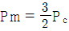
- Pm = 2PC
- Pm = 3PC
(정답률: 알수없음)
3. 트랜지스터의 증폭기의 입력전력이 4[㎽]이고, 출력전력이 8[W]일 때 이 증폭기의 전력이득은?
- 20[㏈]
- 33[㏈]
- 65[㏈]
- 85[㏈]
(정답률: 알수없음)
4. 그림과 같은 연산 증폭기의 증폭도는? (단, Ri =∞, AV =∞)
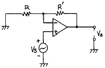
- -R/R'
- -R'/R
- (R + R')/R
- R/(R + R')
(정답률: 알수없음)
5. 그림과 같은 회로에 입력 Vi가 인가되었을 때 출력은 어느 것이 가장 적당한가?
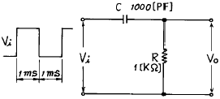
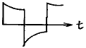
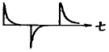
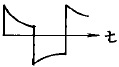
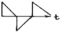
(정답률: 알수없음)
6. 다음 논리식은 무슨 법칙을 활용하여 전개한 것인가?
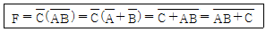
- 보수와 병렬의 법칙
- 드몰간(De Morgan)의 법칙
- 교차와 병렬의 법칙
- 적(積)과 화(和)의 분배의 법칙
(정답률: 알수없음)
7. TTL(Transistor-Transistor Logic)의 특징을 설명한 것으로 틀린 것은?
- Fan - out를 많이 할수 있다.
- 논리회로중 응답속도가 가장 늦다.
- 출력 임피이던스가 낮다.
- 잡음 여유도가 낮다.
(정답률: 알수없음)
8. 동조형 증폭기에서 공진주파수 fo, 주파수 대역폭 B, 코일의 Q 와의 관계를 설명한 것중 맞는 것은?
- B 와 fo 는 비례한다.
- Q 와 fo 는 반비례한다.
- Q 와 fo 의 자승에 비례한다.
- Q 는 B 의 자승에 비례한다.
(정답률: 알수없음)
9. 배타 OR(Exclusive OR)회로의 논리식으로 잘못된 것은?
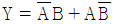
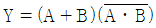
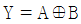
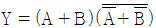
(정답률: 알수없음)
10. 입출력장치를 마이크로컴퓨터에 연결하는 데에 필요한 특수한 장치는?
- 인터페이스(interface)회로
- 레지스터(register)회로
- 누산기(accumulator)회로
- 계수기(counter)회로
(정답률: 알수없음)
11. 그림의 궤환 증폭기에서 C를 제거하면 어떤 현상이 일어나는가?
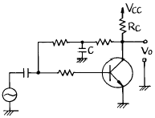
- 이득이 감소한다.
- 이득이 증가한다.
- 발진이 일어난다.
- 안정도가 향상된다.
(정답률: 알수없음)
12. 바크하우젠의 발진조건에서 증폭기의 증폭도 A=100 이고, 귀환회로의 귀환비율을 β 라고 할 때 귀환비율 β 값은?
- 10
- 1
- 0.1
- 0.01
(정답률: 알수없음)
13. CR 발진기의 설명으로 옳은 것은?
- 부성저항 특성을 이용한 발진기이다.
- C 및 R로써 정궤환에 의한 발진기이다.
- 압전효과에 의한 발진기이다.
- 부궤환에 의한 비정현파 발진기이다.
(정답률: 알수없음)
14. 에미터 접지 트랜지스터 스위칭 회로에서 베이스와 에미터를 단락시키면 출력상태는?
- 즉시 파괴된다.
- ON 상태가 된다.
- OFF 상태가 된다.
- ON 상태도 OFF 상태도 아니다.
(정답률: 알수없음)
15. 다음 회로에서 Vi - Vo 특성곡선을 올바르게 나타낸 것은?
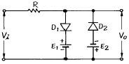
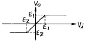
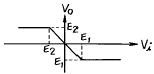
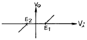
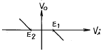
(정답률: 알수없음)
16. JK F/F(flip-flop)의 2개의 입력이 똑같이 1이고, 클럭펄스가 계속 들어오면 출력은 어떤상태가 되는가?
- Set
- Reset
- Toggle
- 동작불능
(정답률: 알수없음)
17. 다음 3변수 논리식을 간단히 하면?
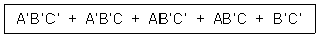
- A
- B
- B'
- C
(정답률: 알수없음)
18. 그림과 같이 1[㏀]의 저항과 실리콘(Si)다이오드의 직렬회로에서 다이오드 양단의 전압은 얼마인가?
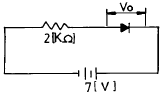
- 0[V]
- 1[V]
- 5[V]
- 7[V]
(정답률: 알수없음)
19. 그림과 같은 회로의 입력에 계단전압(step voltage)을 인가할 때 출력에는 어떤 파형의 전압이 나타나는가? (단, A는 이상적인 연산증폭기이다.)
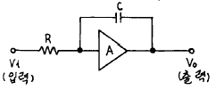
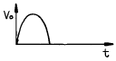
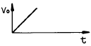
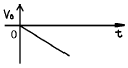
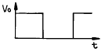
(정답률: 알수없음)
20. SSB(Single Side Band)에 관한 설명 중 맞는 것은?
- LSB와 USB로 구성된다.
- 전력 손실이 높다.
- 점유주파수 대폭이 반으로 줄어들고, 전력소모도 훨씬 적어진다.
- DSB에 비하여 진폭이 2배로 늘어난다.
(정답률: 알수없음)
2과목: 방송통신 기기
21. 컬러 텔레비전의 수상기에는 3가지 색의 전자총이 있는데 아닌 것은?
- 빨강(R)
- 녹색(G)
- 파랑(B)
- 노랑(Y)
(정답률: 알수없음)
22. 지상파방송과 비교한 위성방송의 상대적 장점이 아닌것은?
- 단일 방송파로 넓은 지역에 서비스를 제공할 수 있다.
- 많은 중계소를 설치하는 것보다 경제적이다.
- 넓은 주파수 대역을 통해 대용량의 정보를 보낼 수 있다.
- 초기구축 비용이 상당히 절감된다.
(정답률: 알수없음)
23. 방송국의 부조정실 기기 구성품이 아닌 것은?
- 스위처, 편집기
- 자동송출장비, 안테나
- CCU, VCR, CG
- 파형측정기, 믹서
(정답률: 알수없음)
24. AM 송신기에 있어서 완충증폭기에 대한 설명으로 틀린 것은?
- 발진부 바로 다음 단에 설치를 한다.
- 주로 C급 증폭방식을 채택한다.
- 부하의 변동을 방지한다.
- 발진주파수의 변동을 방지한다.
(정답률: 알수없음)
25. DCT 부호화 방식에서 입력화상의 기본 블록화 화소수는 얼마인가?
- 100
- 64
- 16
- 4
(정답률: 알수없음)
26. 입력 신호의 레벨의 변화에 대하여 상대적으로 출력 신호를 일정하게 유지할 목적으로 증폭기의 동작 레벨을 자동적으로 제어하는 회로는?
- ASC
- AGC
- AFC
- AFT
(정답률: 알수없음)
27. CATV의 스크램블에 대한 설명으로 바른 것은?
- 스크램블은 화면의 잡음을 없애고 특성을 개선하는 장치이다.
- 스크램블은 안전채널과 간섭을 말한다.
- 스크램블은 프로그램 공급자나 CATV 사업자가 해제 할수 있다.
- 스크램블은 단말기 조정장치를 말한다.
(정답률: 알수없음)
28. 슈퍼헤테로다인 수신기의 중간주파수가 455[KHz]일 때 수신된 500[KHz]에 대한 영상 주파수는?
- 955[KHz]
- 1410[KHz]
- 410[KHz]
- 1545[KHz]
(정답률: 알수없음)
29. MPEG-2 압축기법의 프로파일과 레벨을 잘 설명한 것은?
- 프로파일 - 어플리케이션의 수, 레벨 - 비트레이트
- 프로파일 - 화상의 크기, 레벨 - 부호화 기능
- 프로파일 - 부호화 기능, 레벨 - 화상의 크기
- 프로파일 - 비트레이트, 레벨 - 어플리케이션의 수
(정답률: 알수없음)
30. 지표파의 전파특성에 대한 기술내용 중 잘못된 것은?
- 지표파는 파장이 길수록 감쇠가 적다.
- 지표면의 도전율이 클수록 감쇠가 적다.
- 전파통로가 건조지대이면 감쇠가 크다.
- 해면상에서는 원거리까지 도달하기 어렵다.
(정답률: 알수없음)
31. 100% 화이트 기준 레벨은 몇 IRE인가?
- 0 IRE
- 7.5 IRE
- 100 IRE
- 140 IRE
(정답률: 알수없음)
32. 방송국에서 TV 프로그램을 제작, 방송하기 까지에는 여러 과정을 거치게 된다. 그 중에서 카메라, 에코 발생 장치, 음성 믹싱 장치, 문자 발생기 등을 이용하는 과정은?
- 제작과정
- 편집과정
- 송출과정
- 중계과정
(정답률: 알수없음)
33. 위성통신에서 사용되는 다원접속 방식 중 지구국이 증가해도 회선 효율이 양호하고 프레임 내의 특정위치(Time Slot)를 각 지구국에 할당함으로서 지구국 상호간에 혼신 없이 통신이 가능한 방식은?
- TDMA(Time Division Multiple Access)
- SDMA(Space Division Multiple Access)
- FDMA(Frequency Division Multiple Access)
- CDMA(Code Division Multiple Access)
(정답률: 알수없음)
34. TV의 송수신기 사이에서 사용되는 동기방식은?
- 헤테로다인중계방식
- 독립동기방식
- 검파중계방식
- 전송동기방식
(정답률: 알수없음)
35. CATV 시스템의 네트워크 구성 형태중 Tree & Branch형의 설명으로 옳지 않은 것은?
- 사용주파수 대역에 따라 수용채널이 유동적이다.
- CATV 시설을 구성하는 가장 기본적인 망 구성이다.
- 특정채널 접속을 위해 스크램블 해제 장치가 필요한 것도 있다.
- 광케이블 설비에 적절한 형태이다.
(정답률: 알수없음)
36. 다음 중 CATV의 기본구성으로 볼 수 없는 것은?
- 헤드엔드 장치
- 분배장치
- 전송장치
- 교환장치
(정답률: 알수없음)
37. FM 송신기에 사용되는 Pre-emphasis 회로의 설명으로 맞는 것은?
- 변조신호의 높은 주파수 성분을 낮게 하여 변조한다.
- 선택도가 개선된다.
- 전력증폭의 효율이 높아진다.
- S/N비가 향상된다.
(정답률: 알수없음)
38. 오실로스코프를 이용하여 피변조파를 측정한 결과 다음과 같은 변조 포락선이 나타났을 때 변조도는 얼마인가?
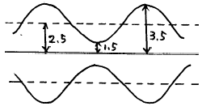
- 16[%]
- 25[%]
- 40[%]
- 80[%]
(정답률: 알수없음)
39. 음성신호레벨의 모니터링에 사용되는 VU미터의 특성이 아닌 것은?
- 실제 음량과 가장 근사한 지시치를 제공한다.
- -6VU의 위치는 50% 지점과 같다.
- 음악 녹음 등의 경우에 과녹음 방지용으로 적합하다.
- 일종의 전압계이다.
(정답률: 알수없음)
40. NTSC TV 방식에서 영상신호와 음성신호의 변조방식은?
- 영상신호 : FM 음성신호 : AM
- 영상신호 : AM 음성신호 : FM
- 영상신호 : PM 음성신호 : FM
- 영상신호 : AM 음성신호 : PM
(정답률: 알수없음)
3과목: 방송미디어 개론
41. MPEG-7 기능으로 적합한 것은?
- 동영상 전송방식이다.
- 음성, 데이터, 혹은 영상으로 데이터베이스 검색이 가능하도록 한다.
- 오디오와 비디오 콘텐츠 인식 툴에 대한 표준을 제공한다.
- 기존 MPEG-1과 MPEG-2 표준을 대체할 수 있다.
(정답률: 알수없음)
42. 우리나라에서 지상파 디지털 TV송출을 위해 채택한 비디오의 압축방식은?
- MPEG -2
- 돌비 AC-3
- MPEG -1
- MPEG -7
(정답률: 알수없음)
43. 양자화란 무엇인가?
- 원신호의 이산치화
- 샘플링 주파수의 선정
- 샘플링 된 신호를 디지털 양으로 표시
- 디지털 신호의 아날로그화
(정답률: 알수없음)
44. CATV 전송로 중 간선에만 사용되는 증폭기로서 전송로의 신호 손실을 보상하며 AGC 등의 기능을 가진 고품질의 증폭기는?
- DA(distribution amplifier)
- EA(extender amplifier)
- SP(splitter)
- TA(trunk amplifier)
(정답률: 알수없음)
45. 방송에서 음성을 제작하는 시스템의 성능을 나타내는 기술적 요소 중 음성장비의 성능을 나타내는 요소가 아닌것은?
- Sync level
- S/N비
- 주파수특성
- Cross-talk
(정답률: 알수없음)
46. 다음 중 케이블 TV와 관계가 없는 것은?
- SO(System Operator)
- PP(Program Provider)
- 종합유선방송
- TCP/IP
(정답률: 알수없음)
47. TV수상기의 해상력이 800 라인 일 때 이를 주파수로 표시하면 얼마인가?
- 4 MHz
- 8 MHz
- 10 MHz
- 12 MHz
(정답률: 알수없음)
48. FM 라디오 방송 대역의 하한에 가장 근접한 아날로그 TV 채널 번호는?
- 2
- 6
- 7
- 13
(정답률: 알수없음)
49. NTSC 방식의 최대 영상주파수는?
- 3[㎒]
- 4.2[㎒]
- 4.5[㎒]
- 5[㎒]
(정답률: 알수없음)
50. 인터넷이 대중화되기 시작한 1990년 이후부터 텔레비전의 대중성을 컴퓨터에 접목시키고자 하는 노력으로 혼합서비스인 인터넷 텔레비전이 가능하게 되었다. 다음 중 인터넷 텔레비전의 특징으로 알맞지 않은 것은?
- 실시간 방송
- VOD개념의 도입
- 제작과정의 복잡성
- 이용자 위주의 방송
(정답률: 알수없음)
51. FM 통신방식의 특징이 아닌 것은?
- S/N 비가 좋다
- 송신기의 효율을 높일 수 있고, 일그러짐이 적다.
- 혼신 방해를 적게 할 수 있다.
- 주파수 대역을 넓게 잡을 필요가 없다.
(정답률: 알수없음)
52. 영상신호에서 R-Y 와 I 신호의 위상차이는 얼마인가?
- 90도
- 33도
- 45도
- 60도
(정답률: 알수없음)
53. 멀티미디어의 특징에 해당되지 않는 것은?
- 상호작용성(interactivity)
- 통합성(integrity)
- 연결성(connectivity)
- 비밀성(security)
(정답률: 알수없음)
54. TV방송전파를 이용하여 TV방송과 함께 동시에 2개 외국어로 정보를 전송할 수 있는 뉴미디어는?
- 문자다중 방송
- 음성다중방송
- 인터케스트 방송
- DARC
(정답률: 알수없음)
55. 종래와 같이 CATV국에서 송출하는 TV 프로그램을 일방적으로 수신하는 기존의 단방향 수신방식에서 벗어나 비디오서버에 저장된 프로그램을 사용자들이 직접 선택하여 원하는 프로그램을 언제든지 볼 수 있도록 한 양방향 비디오 서비스는?
- VOD
- NTSC
- DBS
- SMATV
(정답률: 알수없음)
56. 다음 중 반송파의 주파수가 초단파 대이므로 FM 방송, TV의 오디오, Hi-Fi 방송, 스테레오 방송등에 이용이 되는 주파수 대역의 범위는?
- 30-300[kHz]
- 3-30[MHz]
- 30-300[MHz]
- 300-3000[MHz]
(정답률: 알수없음)
57. 다음 중 방송제작 스태프에 해당하지 않는 인력은?
- 프로듀서
- 분장사
- 조연출
- 작가
(정답률: 알수없음)
58. 우리나라 CATV 방송망의 일반적인 구성형태는?
- STAR형
- Loop형
- Tree/Branch형
- Hybrid형
(정답률: 알수없음)
59. 지상으로부터 전파를 받아 증폭시켜 다시 지상으로 되돌려 보냄으로써 장거리 통신의 중계소로써의 역할을 하는 공공용 또는 업무용 정지위성은?
- SONET
- INTELSAT
- MIR
- COLUMBIA
(정답률: 알수없음)
60. 아날로그 전송로에서 TV영상신호 방송파가 주로 이용하는 다중전송방식은?
- TDM
- FDM
- PDM
- PCM
(정답률: 알수없음)
4과목: 전자계산기 일반 및 방송설비기준
61. 다음중 인터럽트(interrupt)가 발생되지 않는 경우는 어느 것인가?
- 오퍼레이터의 필요시 콘솔인터럽트 key 조작에 의해 자료를 입력하여, 현재 수행되는 프로세서를 제어할 때
- 연산결과 오버플로(overflow)가 발생했을 경우 또는 0으로 나누었을 경우
- 입출력장치의 착오에 의하여 오류가 발생하는 경우
- 인덱스 주소방식에 의해 메모리의 자료를 다른 영역의 메모리에 이동시킬 때
(정답률: 알수없음)
62. 다음 중 정보의 개념을 하위 개념에서 부터 상위 개념으로 나열한 것은?
- 필드(Field) → 레코드(Record) → 파일(File) → 문자(Character)
- 레코드(Record) → 파일(File) → 필드(Field) → 문자(Character)
- 문자(Character) → 필드(Field) → 레코드(Record) → 파일(File)
- 파일(File) → 문자(Character) → 필드(Field) → 레코드(Record)
(정답률: 알수없음)
63. 유선방송국설비등에관한기술기준에서 "유선방송설비" 의 정의는?
- 유선방송국설비와 전송선로설비를 말한다.
- 유선방송국설비와 선로설비를 말한다.
- 유선방송국설비와 수신설비를 말한다.
- 유선방송국설비와 송신설비를 말한다.
(정답률: 알수없음)
64. 무변조상태에서 송신장치로부터 송신공중선계의 급전선에 공급되는 전력으로서 무선주파수의 1주기 동안에 걸쳐 평균한 전력을 무슨 전력이라고 하는가?
- 첨두 전력
- 평균 전력
- 반송파 전력
- 규격 전력
(정답률: 알수없음)
65. 지상파 디지털 텔레비전 방송신호의 변조된 신호의 채널당 주파수 대역폭은?
- 1[MHz]
- 4[MHz]
- 6[MHz]
- 12[MHz]
(정답률: 알수없음)
66. 자료의 외부적 표현방식인 EBCDIC 코드로 표현할 수 있는 최대 문자수는?
- 36자
- 120자
- 256자
- 282자
(정답률: 알수없음)
67. 프로그램 카운터가 명령 번지 부분과 더해져서 유효 번지가 결정되는 주소지정 방식은?
- 상대 번지 모드
- 간접 번지 모드
- 인덱스 번지 모드
- 베이스 레지스터 번지 모드
(정답률: 알수없음)
68. 방송사업자가 그 업무를 폐업 또는 휴업하고자 하는 경우 행정 절차는?
- 방송위원회와 정보통신부장관에게 각각 신고하여야 한다.
- 방송위원회와 문화관광부장관에게 각각 신고하여야 한다.
- 방송위원회에 신고하여야 한다.
- 정보통신부장관에게 신고하여야 한다.
(정답률: 알수없음)
69. 다음 중 전자계산기 중앙처리장치의 구성요소가 아닌 것은?
- 주기억장치
- 제어장치
- 연산장치
- 전원장치
(정답률: 알수없음)
70. 다음에서 접근 속도(access time)가 빠른 순서로 나열된 것은?
- 자기코어 - 자기디스크 - 자기드럼
- 자기버블 - 캐시 - 자기디스크
- 자기코어 - 캐시 - 자기디스크
- 캐시 - 자기코어 - 자기드럼
(정답률: 알수없음)
71. 방송 관련사업자에 대한 방송 위원회의 시정 명령에 포함되지 않는 사항은?
- 시청자의 이익을 현저히 부당하게 저해하고 있다고 인정될 때
- 방송법을 위반하고 있다고 인정될 때
- 허가 및 승인조건과 등록요건을 위반하고 있다고 인정될 때
- 설치한 시설이 허가조건 및 등록요건을 위반하고 있다고 인정될 때
(정답률: 알수없음)
72. 방송국(초단파 방송, TV 방송은 제외) 송신설비의 공중선 전력의 허용편차 하한치는?
- 5〔%〕
- 10〔%〕
- 20〔%〕
- 60〔%〕
(정답률: 알수없음)
73. 순서도의 작성 시기는?
- 입.출력 설계 후
- 타당성 조사 후
- 프로그램 코딩 후
- 자료 입력 후
(정답률: 알수없음)
74. 주사에 따라 생기는 직접적인 전기적 변화로서 정지 또는 이동하는 사물의 순간적 영상을 전송하기 위한 신호를 무엇이라고 하는가?
- 음성신호
- 주사신호
- 영상신호
- 정지신호
(정답률: 알수없음)
75. 오퍼레이팅 시스템의 성능 평가중 데이터 처리를 위하여 시스템이 필요하게 되었을 때 시스템을 어느 정도 빨리 사용할 수 있는가를 나타내는 것은?
- 처리능력
- 응답시간
- 사용가능도
- 신뢰도
(정답률: 알수없음)
76. 위성방송 사업과 관계가 없는 것은?
- 채널 사업자
- 플랫폼 사업자
- 위성체 사업자
- 전송망 사업자
(정답률: 알수없음)
77. 종합유선 방송국 주전송장치등의 기술적조건에서 주파수 변조기 중 무선방식(MMDS)에서 음성신호 특성의 신호대잡 음비는?
- 35dB이상
- 45dB이상
- 55dB이상
- 60dB이상
(정답률: 알수없음)
78. (01001101)2 의 1의 보수는?
- (10110010)2
- (01001110)2
- (11001101)2
- (10110011)2
(정답률: 알수없음)
79. 공동시청 안테나시설에 사용하는 설비가 아닌 것은?
- 수신안테나
- 레벨조정기
- 광케이블
- 수신증폭기 및 선로증폭기
(정답률: 알수없음)
80. 다음중 도형이나 사진 등을 기억장치로 읽어들일 수 있는 장치는?
- keyboard
- scanner
- mouse
- OCR
(정답률: 알수없음)